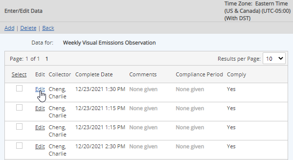
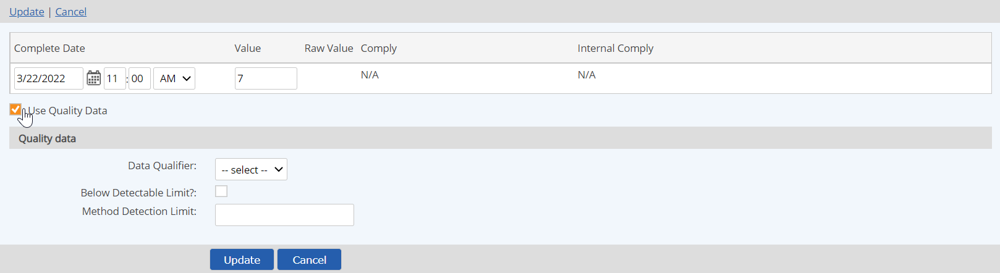

Data Quality fields define attributes of a data point on a parameter. When a parameter has an associated Data Quality Template, an additional set of custom fields are available for entering supplemental information concerning the data point. For example, data quality fields may provide supplemental information on data exceedances or variances, such as explanatory details for a data point that is out of range because of monitoring equipment failure.
To view Data Quality fields for a parameter:
Select the parameter, right click and choose Data > View.
To view data quality fields, you must view data for only one requirement at a time.
To enter data quality information, you must check the "Use Quality Data" checkbox to enable the use of Data Quality fields on a data point. This field is only available during standard Data Enter/Edit on a single parameter that has an associated Data Quality Template.
When adding new data, the Use Quality Data checkbox is disabled by default, but may be enabled if a Data Quality Template is attached to the parameter.
You can enter data quality information:
To enter or edit data quality information for a single parameter in HTML:
Select the Edit link for the data point for which you want to add data quality information.

The data point values are displayed, with the Use Data Quality checkbox below. If no data quality yet exists, it is unchecked. Check the Use Data Quality Template checkbox to display the fields.
If the data point already has data quality information, the box is checked and the fields are already displayed for editing.

Enter the desired information for the data quality fields, then click Update.
To delete existing data quality information: Uncheck the Use Quality Data box. When you save, the data quality information will be removed.
Click Save to save the edits.
To enter data quality information for multiple data points:
Select the parameters for which you want to enter data and choose Excel for the data entry method.
The Excel template will show columns for the data quality information for each parameter.
Enter the desired data quality information where appropriate. When the data is uploaded to the system, data quality fields will be saved only for those data points where the fields have values.